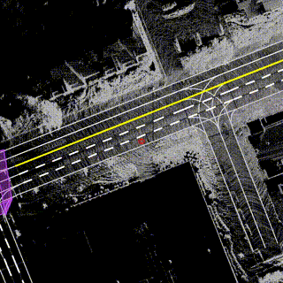
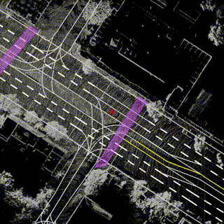
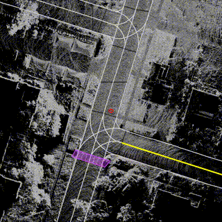
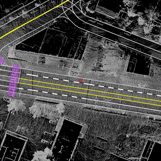

High Precision and Robust Vehicle Localization Algorithm with Visual-LiDAR-IMU Fusion
IEEE Transactions on Vehicular Technology, 2024, 73(8): 11029–11043.
现任武汉纺织大学计算机与人工智能学院讲师、硕士生导师，同时在武汉理工大学智能交通研究中心从事博士后研究。2022年10月获武汉理工大学交通信息工程及控制专业博士学位，同年11月加入武汉纺织大学。研究围绕自动驾驶与机器人感知定位展开，涉及多传感器融合、视觉 SLAM 及机器学习。主持国家自然科学基金青年项目等科研任务，并承担学术期刊审稿与学生竞赛指导工作。
无人驾驶；机器人协同感知；视觉SLAM；深度/机器学习

IEEE Transactions on Vehicular Technology, 2024, 73(8): 11029–11043.

Measurement, 2023, 221: 113432.

Engineering Applications of Artificial Intelligence, 2022, 114: 104992.

Energy Reports, 2021, 7(6): 1–9.
打篮球。